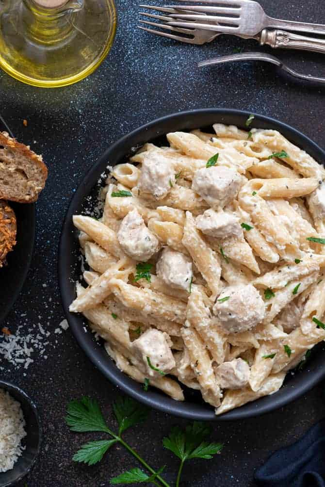

Chicken Alfredo Pasta

a plat of Chicken Alfredo Pasta
Description
A creamy and comforting pasta dish made with tender chicken, fettuccine noodles, and a rich Parmesan Alfredo sauce.
Ingredients
- 2 chicken breasts, sliced
- 2 tbsp butter
- 2 cloves garlic, minced
- 1 cup heavy cream
- 1 cup grated Parmesan cheese
- Salt and pepper to taste
- 1 tbsp olive oil
- Fresh parsley (optional)
- 12 oz fettuccine pasta
Steps
- Cook the fettuccine according to package instructions.
- Season the chicken with salt and pepper.
- Heat olive oil in a skillet and cook the chicken until golden and cooked through.
- Remove the chicken and set aside.
- Melt butter in the same skillet and sauté the garlic.
- Add the heavy cream and simmer for 2–3 minutes.
- Stir in the Parmesan cheese until smooth.
- Add the cooked pasta and chicken to the sauce.
- Toss until evenly coated.
- Garnish with parsley and serve.
Previous pages